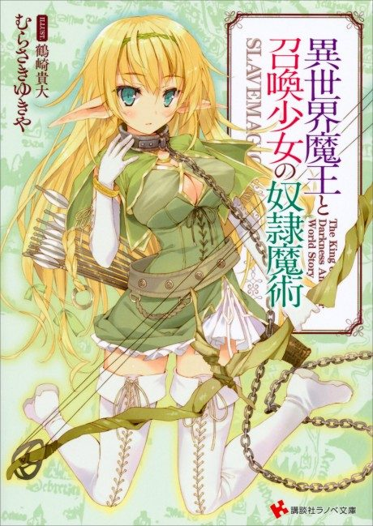

How NOT to Summon a Demon Lord
異世界魔王と召喚少女の奴隷魔術
Takuma, a top player of an online game, is summoned to its world by two girls who want to enslave him, but their spell backfires on them.
We haven't found where the anime ends in the light novel yet.
6.6AniList score
—Animeter, no votes yet
22episodes, 2 seasons
Rate it or report where you stopped
Anime finished. Where does the story go next?
StatusNo source yet
We looked for where the anime ends in the light novel but found no source we trust yet. The light novel is still running.
More like How NOT to Summon a Demon Lord
 Manga Vol. 58.1
Manga Vol. 58.1
 Manga Vol. 27.2
Manga Vol. 27.2
 Unclear6.8
Unclear6.8
 Manga Vol. 56.6
Manga Vol. 56.6
 Manga Vol. 47.7
Manga Vol. 47.7
 Manga Ch. 2157.7
Manga Ch. 2157.7
 Unclear7.1
Unclear7.1
 Unclear5.3
Unclear5.3
 Manga Ch. 347.6
Manga Ch. 347.6
 Unclear7.0
Unclear7.0
 Manga Vol. 55.9
Manga Vol. 55.9
 Unclear5.7
Unclear5.7